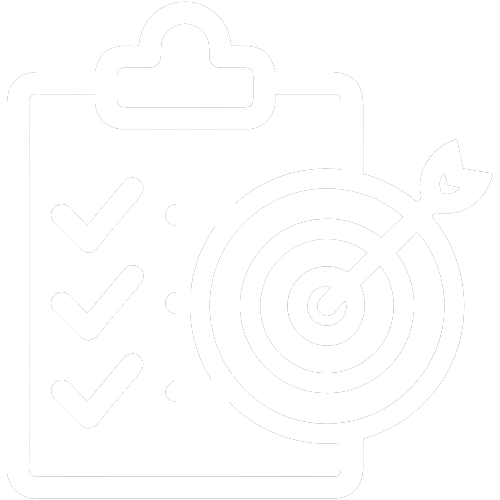
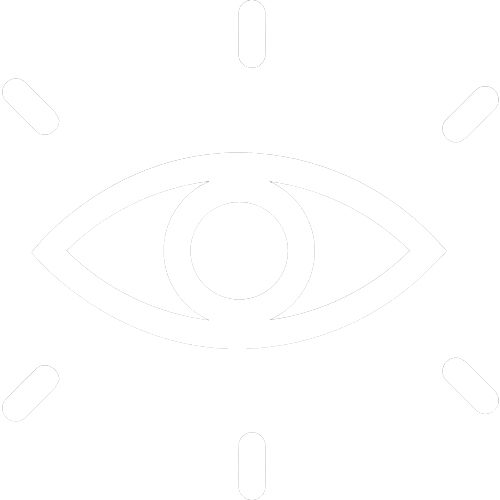

O que é a S.A.M?
A S.A.M Soluções Inteligentes foi criada com o intuito de melhorar a produção industrial de empresas que utilizam torno e facilitar o processo de trabalho dos colaboradores.
Análise da indústria atual:
A demanda por sistemas automatizados aplicados às características da indústria 4.0 têm crescido no mercado ao decorrer dos anos, consequentemente fazendo com que as linhas de produção que dispensam esse tipo de tecnologia se tornem obsoletas. Logo, com essa exigência em ascensão no mercado, as empresas têm buscado cada vez mais por inovações como a que a S.A.M está trazendo com o lançamento deste novo produto. O que fará que ele seja requisitado por indústrias por todo o Brasil.
Missão, visão e valores:

Missão: contribuir de forma benéfica para a indústria, a fim de gerar mais produtividade, e alcançar mais setores do mercado.
